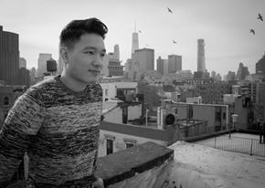

Bio
Founder: Dennis Luo
Birth Place: New York City, NY
Languages Spoken: English, Chinese, Spanish
Places Lived: China, United States, Spain, Colombia
Favorite Place In The World: Salento, Colombia
Education
Universitat Pompeu Fabra, Barcelona, Spain 2014
B.S. Management & Business, 2015
General Assembly Web Development Immersive Program, 2017
Leadership
Academy of Finance Award, 2011
Vice President of Skidmore College's American Red Cross Club (11/2011 - 12/2013)
Finalist, Saratoga Springs StartUp Weekend 2014
Treasurer of Skidmore College's Investment Club (09/2014 - 05/2015)
Participant, New York Executive Clean Energy Leadership Program (06/2015 - 07/2015)
Volunteer Co-English Teacher, Institucion Educativa La Merced (01/2016 - 04/2016)